Persatuan Puteri Islam Malaysia (PPIM)
Persatuan Puteri Islam Malaysia (PPIM) ialah sebuah organisasi kokurikulum yang bertujuan untuk membimbing pelajar perempuan menjadi individu yang berakhlak mulia, berilmu, dan berbakti kepada masyarakat. Di sekolah rendah, PPIM berperanan memperkukuhkan nilai-nilai murni, memupuk disiplin, dan mengasah kemahiran hidup dalam kalangan murid.
Objektif PPIM:
- Pendidikan Akhlak dan Nilai Murni: Mengajar murid untuk mengamalkan sifat-sifat terpuji seperti kejujuran, tolong-menolong, dan tanggungjawab.
- Latihan Kepimpinan: Membangunkan ciri kepimpinan dalam kalangan murid melalui aktiviti berkumpulan.
- Kemahiran Hidup: Memberi pendedahan kepada kemahiran asas seperti memasak, jahitan, dan pertolongan cemas.
- Kesedaran Kesihatan dan Kebersihan: Mendidik tentang pentingnya menjaga kebersihan diri, pemakanan sihat, dan gaya hidup aktif.
Aktiviti PPIM:
- Perkhemaan Unit Beruniform
- Gotong royong unit beruniform
- Ikhtiar hidup.
- Aktiviti perkhemahan mini
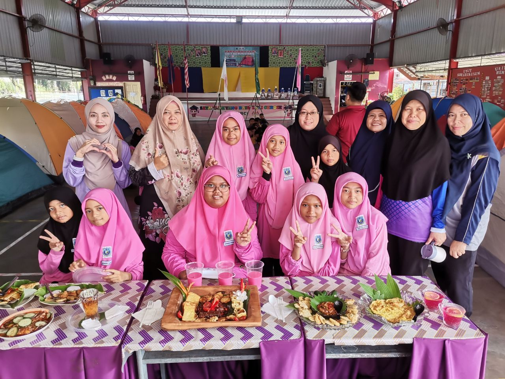
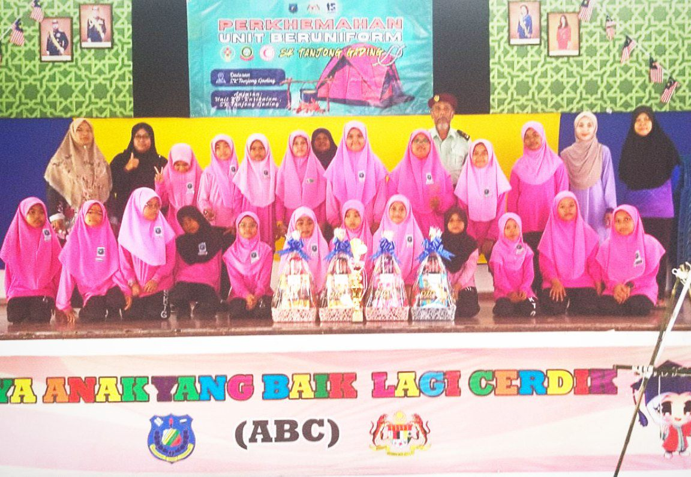
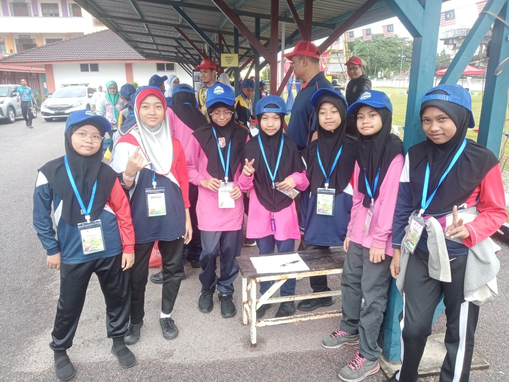
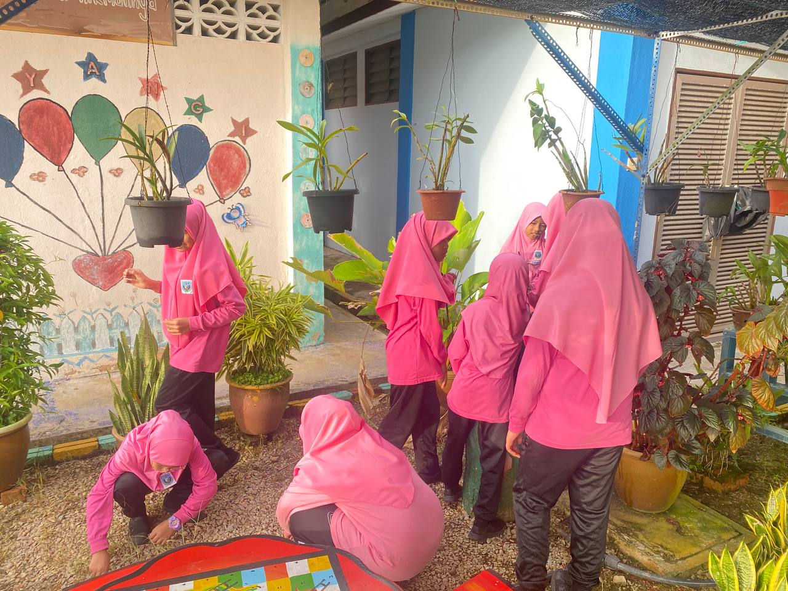
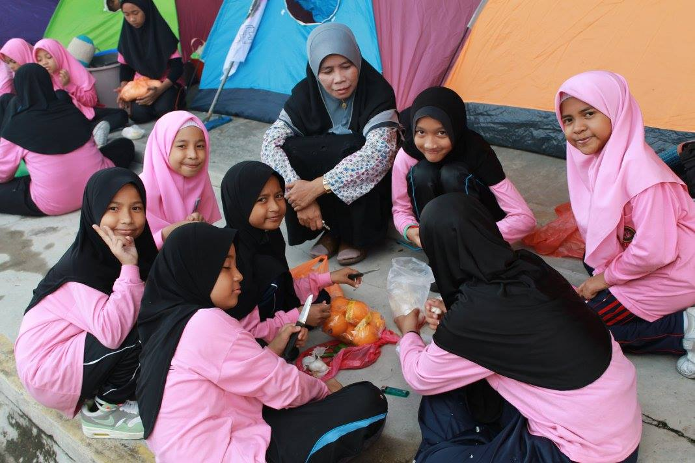
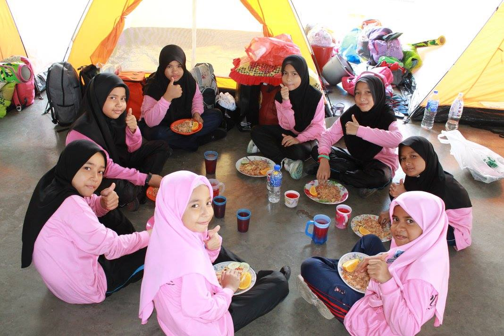
Pengakap
Pengakap merupakan salah satu badan beruniform yang menawarkan pengalaman pembelajaran melalui aktiviti luar kelas yang menyeronokkan dan mencabar. Program pengakap memberi peluang kepada murid sekolah rendah untuk membina daya tahan, memupuk semangat kerjasama, dan mempelajari kemahiran praktikal.
Objektif Pengakap:
- Kemahiran Hidup Asas: Melatih murid dalam bidang ikatan tali, memasak asas, dan membaca peta.
- Disiplin dan Kepimpinan: Membentuk sikap tanggungjawab dan kebolehan memimpin kumpulan.
- Semangat Kejiranan: Menggalakkan aktiviti khidmat masyarakat seperti program kebersihan atau derma.
Aktiviti Pengakap:
- Kem jati diri
- Pembelajaran Asas Ikatan
- Gotong royong Unit Beruniform
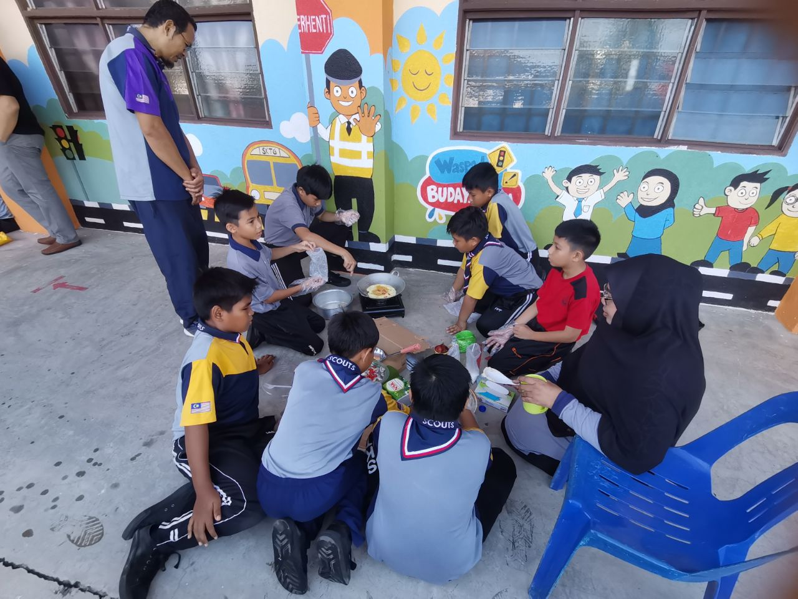
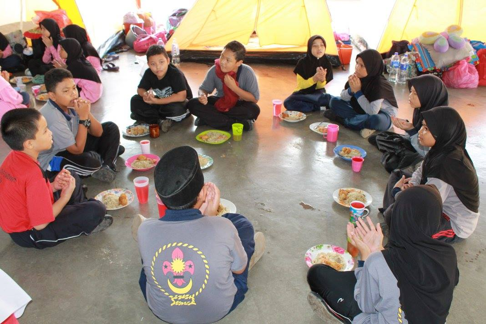
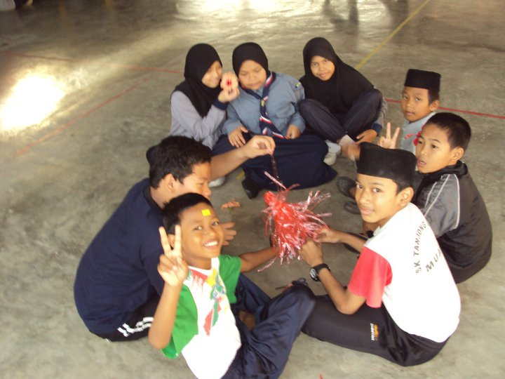
Persatuan Bulan Sabit Merah (PBSM)
Persatuan Bulan Sabit Merah Malaysia (PBSM) adalah sebuah badan beruniform yang memberi penekanan kepada kemahiran pertolongan cemas, kesedaran kesihatan, dan kebajikan masyarakat. Di peringkat sekolah rendah, PBSM mendidik murid tentang pentingnya membantu orang lain, disiplin diri, dan bekerjasama dalam situasi kecemasan.
Objektif PBSM:
- Kemahiran Pertolongan Cemas: Melatih murid dalam asas rawatan luka, balutan, dan tindakan kecemasan.
- Kesedaran Kesihatan: Mendidik murid tentang gaya hidup sihat dan penjagaan kebersihan.
- Latihan Disiplin dan Kerjasama: Melibatkan murid dalam aktiviti berkumpulan yang memupuk sikap bertanggungjawab.
Aktiviti PBSM:
- Menyertai perhimpunan mingguan persatuan.
- Ceramah mengenai jenis jenis luka
- Perkhemahan Unit Beruniform
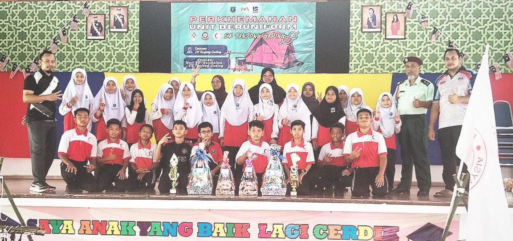
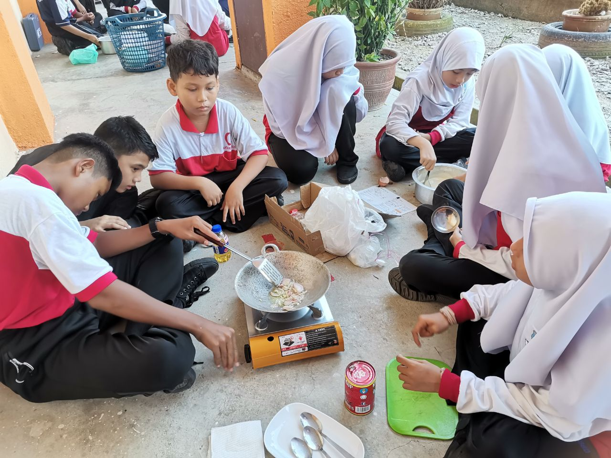
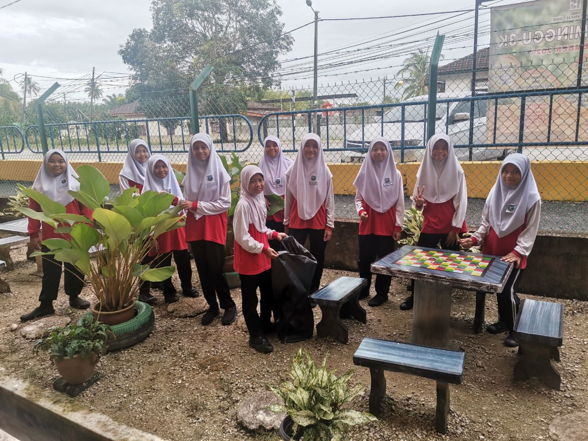
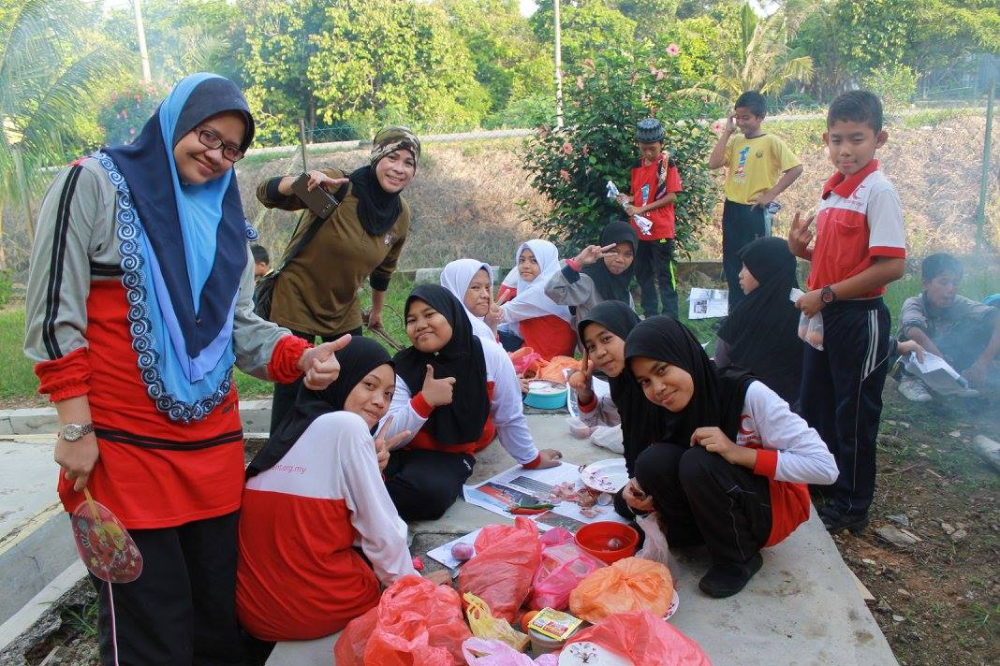
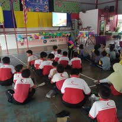
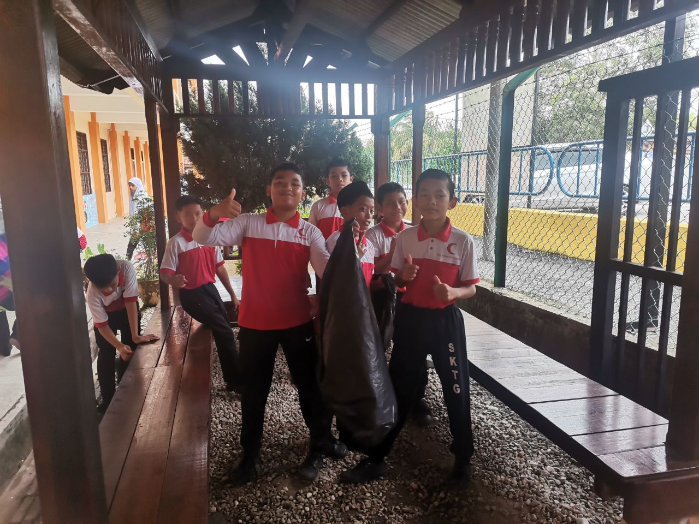